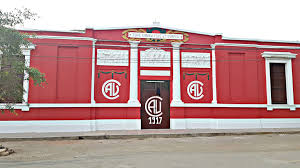

Tradiciones vivas de Chiclín
Danzas Folklóricas
5 agrupaciones activas que mantienen viva la identidad del pueblo


Huanquillas de Chiclín
Las Huanquillas de Chiclín son una de las danzas más representativas y antiguas del distrito de Chiclín, ubicado en el valle Chicama, región La Libertad – Perú. Esta danza tradicional refleja la identidad cultural del pueblo y se presenta principalmente durante fiestas patronales, celebraciones religiosas y actividades culturales.
Danza tradicional que representa la fuerza, la fe y la identidad cultural del pueblo chiclinero. Sus coloridos trajes y movimientos vigorosos mantienen viva una de las expresiones folclóricas más importantes de la región.


Diablada de Chiclín
Danza de máscaras y colorido espectacular que representa la lucha eterna entre el bien y el mal. Sus trajes elaborados y coreografía dinámica la convierten en una de las más vistosas del Valle.


Los Ancashinos de Chiclín
Los Ancashinos de Chiclín es una danza folclórica tradicional que destaca por sus movimientos enérgicos, música festiva y gran valor cultural dentro del Valle Chicama.
Sus danzantes representan la alegría, unión y costumbres del pueblo chiclinero mediante coloridos vestuarios y expresiones artísticas que mantienen viva la tradición regional.


Los Salaverry de Chiclín
Los Diablos de Salaverry es una reconocida agrupación tradicional festiva originaria del puerto de Salaverry que, con el paso de los años, también ha establecido una sede y participación cultural en Chiclín.
Participa en pasacalles, procesiones y celebraciones patronales como las festividades del Señor de la Caña, manteniendo viva la tradición folclórica y religiosa.


Los Diablos de Chiclín
Los Diablos de Chiclín es una banda tradicional originada el 6 de junio de 1936 por ex trabajadores de la antigua hacienda Chiclín. Su principal objetivo fue mantener el orden durante las festividades en honor al Señor de la Caña.
Esta representación cultural simboliza al diablo caído y vencido ante el poder de Dios. Actualmente participan en fiestas patronales, pasacalles, novenas y eventos culturales.
Fiesta Regional del Señor de la Caña
Organizada por la Hermandad del Señor de la Caña — celebración el 28 de junio

Fiesta Regional del Señor de la Caña
Una de las celebraciones religiosas más importantes del norte del Perú. Cada año, durante el mes de junio, el pueblo de Chiclín se viste de fe, color y tradición para honrar a su santo patrón — el Señor de la Caña — una devoción que nació entre los trabajadores cañaveleros de la antigua hacienda y que hoy convoca a miles de peregrinos de toda La Libertad.
La festividad incluye novenario, misas, paseo de la cera, procesión solemne, danzas folklóricas, bandas en vivo, feria gastronómica y quema de fuegos artificiales. Una experiencia de fe y cultura que se celebra ininterrumpidamente desde 1932.
Los 3 Días de la Gran Festividad
Desde el novenario que inicia en junio hasta los días centrales de celebración, el pueblo de Chiclín vive su fe y tradición con una devoción de más de 90 años.
Día de Vísperas
Día de Vísperas
- 🕔 3:00 pm — Quema de cameratazos anunciando la víspera
- 💐 4:00 pm — Arreglo floral del anda del Señor de la Caña
- 📿 5:00 pm — Rosario ofrecido por los devotos
- 🎭 5:30 pm — Mini paseo de Ceras y procesión con danzas típicas invitadas
- 🎶 9:00 pm — Gran baile popular con orquestas en vivo
- 🍲 11:00 pm — Gran caldo para todos los asistentes y fieles devotos
Paseo de Ceras
Paseo de Ceras
- 🎭 Gran pasacalle de grupos de danza por las calles de Chiclín
- 🥁 Bandas de músicos en vivo acompañando el recorrido
- 👼 Angelitos y sahumadoras en procesión
- 🏛️ Delegaciones de autoridades locales y regionales
- 🎆 Fuegos artificiales nocturnos
- 💃 Verbena cultural y baile popular
Día Central
Día Central
- ⛪ 10:00 am — Traslado de la Sagrada Imagen del Inter
- 🙏 11:00 am — Solemne Misa Central en el templo Cristo Rey de Chiclín
- 🚶 12:00 pm — Gran Procesión por las calles con bandas y danzas folclóricas
- 🍽️ 1:30 pm — Almuerzo de confraternidad para todos los asistentes
- 💃 2:00 pm — Gran baile social
- 🎆 Noche — Quema de castillos y fuegos artificiales
Club Sport Alfonso Ugarte de Chiclín
Tradición deportiva del pueblo — fundado en 1917

ALFONSO
UGARTE
Fundado el 1 de agosto de 1917 por trabajadores de la Hacienda Chiclín, es el equipo más querido del Valle Chicama y el primer campeón de la Copa Perú en la historia del fútbol peruano.